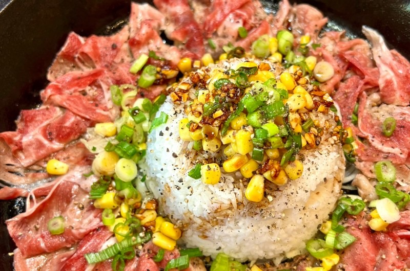

Pepper Lunch

This recipe is based on Ian Kewks' Sizzling Beef Pepper Rice recipe.
Ingredients
- Pepper
- Onions
- Garlic
- Butter
- Corn
- Rice
- Oyster Sauce
- Mirin
- Honey
- Meat (whatever meat you want)
Steps
- Prepare your ingredients.
Cut your onions and garlic. Defrost your meat and corn (if they
are frozen corn).
- Cook your meat with butter and garlic on medium heat.
- Once meat is cooked add in your onions.
- Add your rice and corn. Mix well.
- Add your sauce with equal parts oyster sauce, mirin and soy sauce.
- Add honey and adjust to your taste.
- Mix well until onions are soft and everything is coated in the sauce.
- Add pepper and is ready to serve.
Homepage